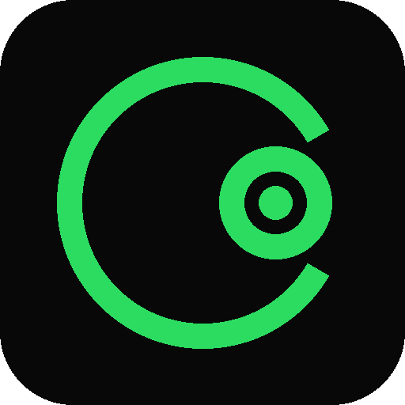
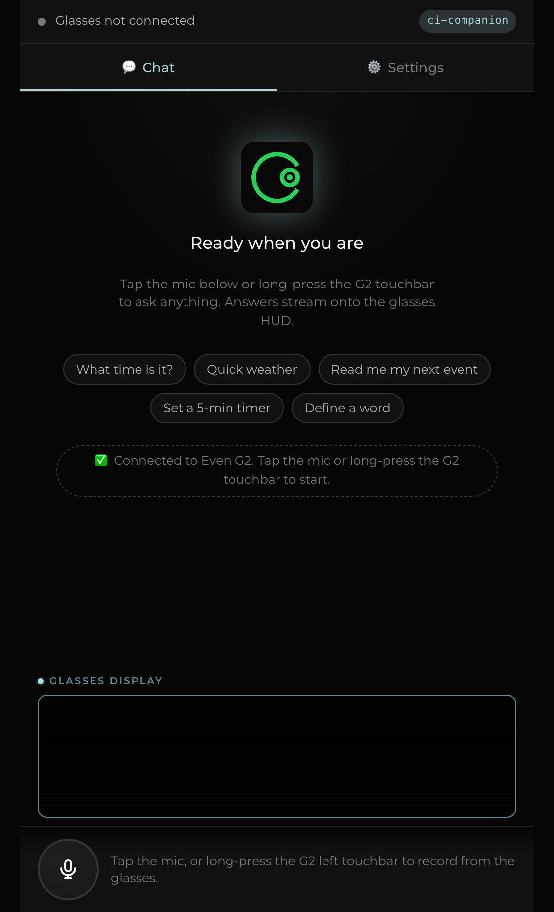
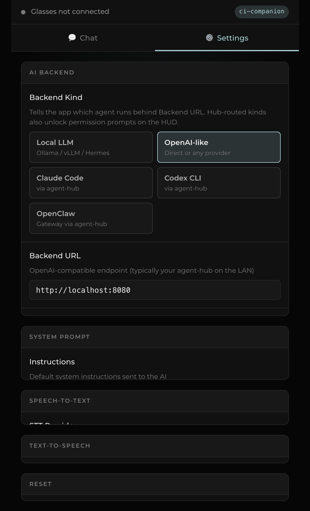

CI CompanionCI Companion turns your G2 glasses into a voice-driven front end for the AI backend you choose — local LLMs, coding agents, or your own CI-Hub. This page walks through installing the app and connecting it.
One glasses app, one wire contract — the backend you pick is a swap, not a rewrite.
flowchart LR
subgraph glasses["Even Realities G2"]
mic["BLE mic"]
hud["MicroLED HUD"]
end
phone["CI Companion
phone app"]
subgraph pick["Pick a backend in Settings"]
direct["Any OpenAI-compatible URL"]
hub["CI-Hub, via agent-hub"]
end
ai["Ollama · Claude Code · Codex · OpenClaw · OpenAI · Companion Memory"]
mic --> phone
phone --> hud
phone --> direct
phone --> hub
direct --> ai
hub --> ai
ai -.streamed reply.-> phone
No account required to get started — bring your own backend, or connect a CI-Hub.
Open the Even Hub portal
in the Even Hub mobile app and install CI Companion
(package com.companionintelligence.ciglasses).
Requires Even Hub app 2.2.10+.
Open the Settings tab in the app, then pick one:
Sign in with Companion Intelligence — one tap under Account; no API key to manage.
CI-Hub quick-connect — enter your Hub's host once, then tap a service below.
Sign in right here instead, and this page remembers your Hub for next time.
Long-press the G2 touchbar (or tap the mic in-app) to ask a question. The answer streams onto the HUD as it arrives.
Ring: tap = next page / deny prompt · double-tap = clear conversation / approve prompt.
The phone webview — captured from the production build, dark HUD surface, sage accent.


Sign in with Companion Intelligence and this page remembers your Hub and reconnects automatically next time you visit — or skip sign-in and just fill in your Hub host below. Everything runs in your browser; the only network calls are to CI-Portal (if you sign in) and to the Hub host you enter (to check it's reachable).
8787) — one URL for chat and voice.
For bringing your own OpenAI-compatible endpoint instead of a CI-Hub.
| Field | Default | |
|---|---|---|
| Backend URL | http://localhost:8080
|
|
| API Key | ci-local-key
|
|
| Model | ci-companion
|
|
| API Mode | auto — probes the server, or force completions / responses |
8787) and pick the matching Backend Kind in Settings. See the
agent-hub README
for env vars and Docker instructions.
The app speaks one OpenAI-compatible wire; the Backend Kind tells it what to expect on the other end.
Quick answers before you file an issue.
The app only gets glasses-BLE features inside the Even Hub app or its simulator. Chat, settings, and AI requests still work in a plain browser — only the HUD mirror is unavailable.
The phone webview is the source of truth — if the glasses display doesn't update, check the status bar's ⚠ HUD indicator; a BLE hiccup self-clears on the next send.